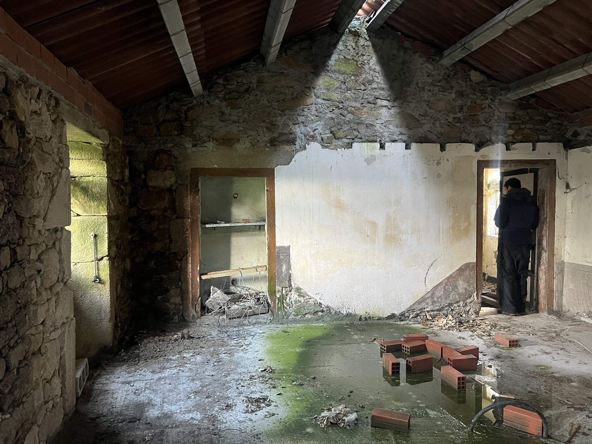

Casa Negreira
The house is a two-storey granite rubble masonry building on the edge of the town of Negreira — partially collapsed internally when purchased, the upper floor structure failed, standing water on the ground floor, the site completely overgrown. A building most buyers would walk away from.
The restoration is being carried out in phases. The approach is restrained: exposed stone walls cleaned and repointed in lime, handmade terracotta tiles on the ground floor, a double-height volume created by opening the original floor structure to the roof ridge. The original timber ridge beam is retained as a datum between the existing fabric and the new intervention.
The project is both my home and a live study in how a UK architect navigates the Spanish planning and building system — the licencias, the aparejador, the local contractor culture, and the material palette of rural Galicia.
